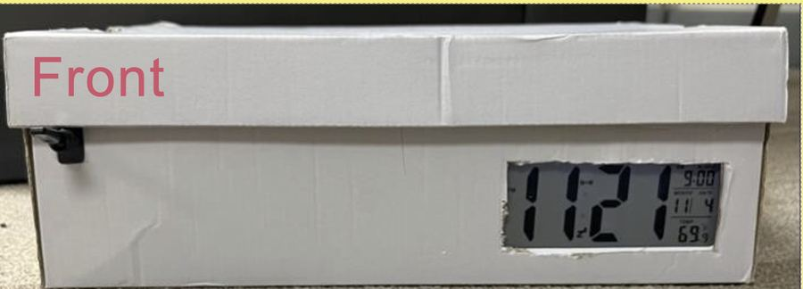
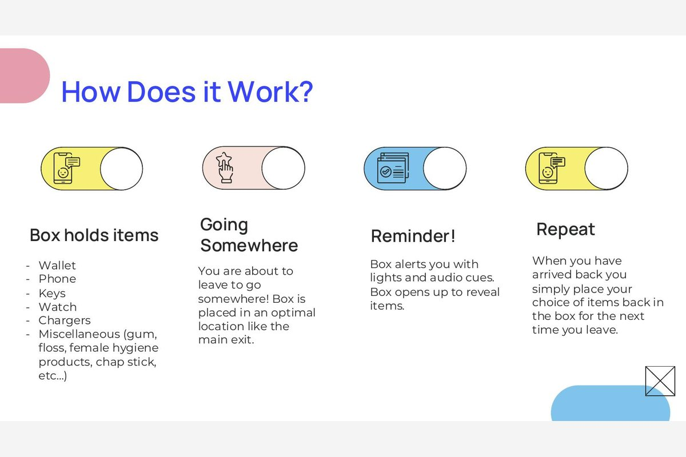
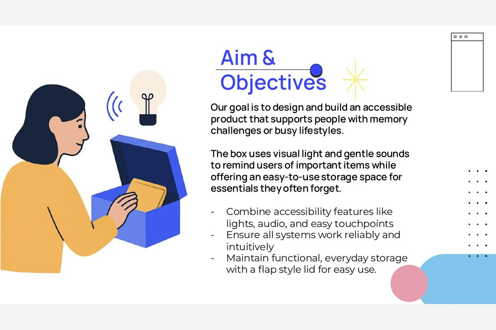
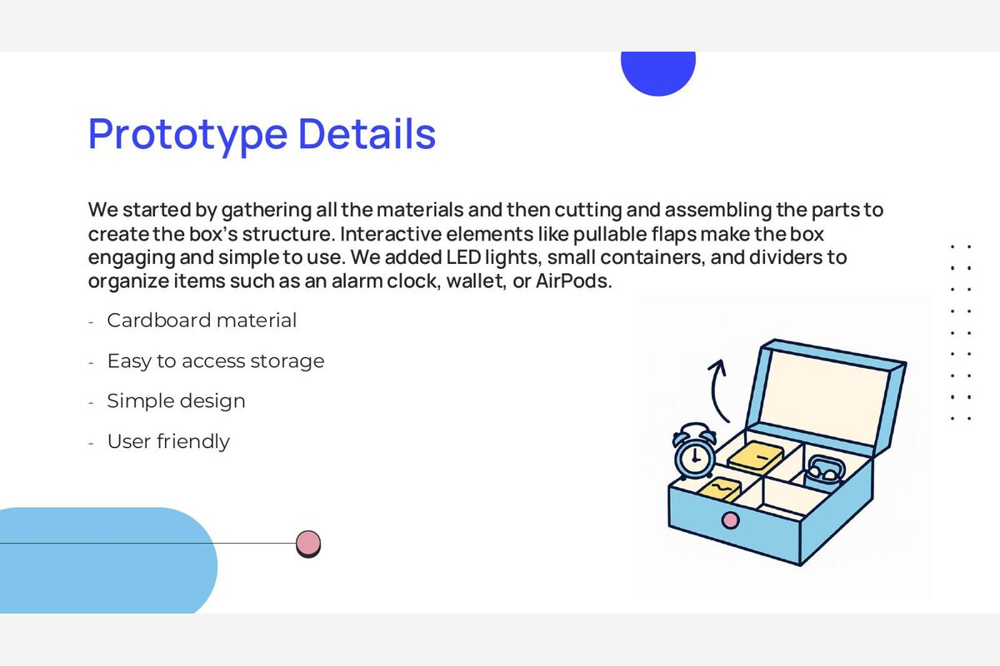
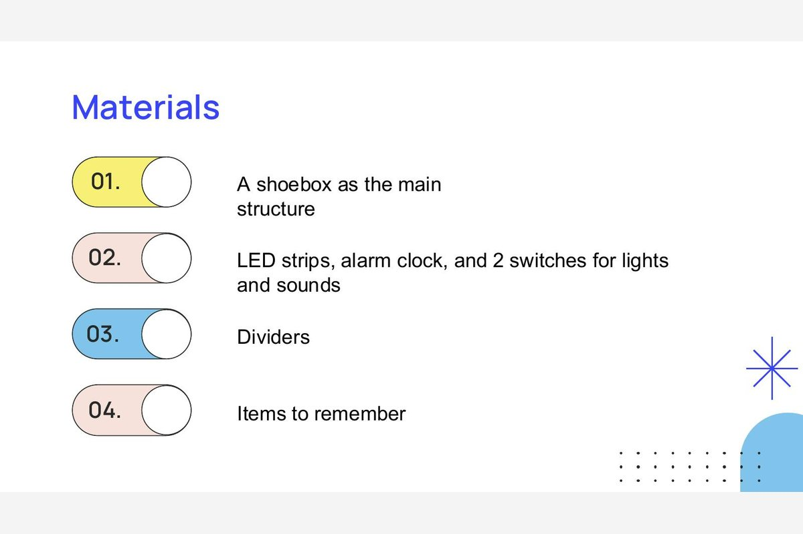
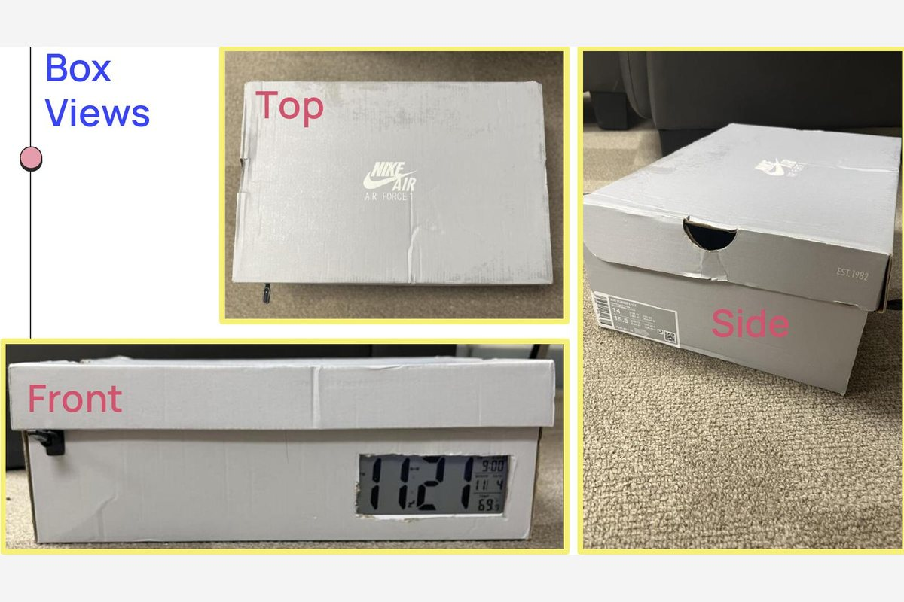
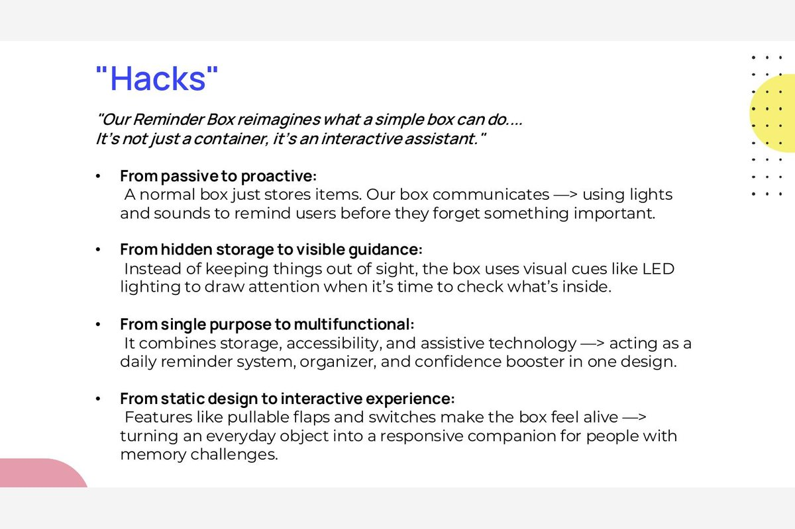
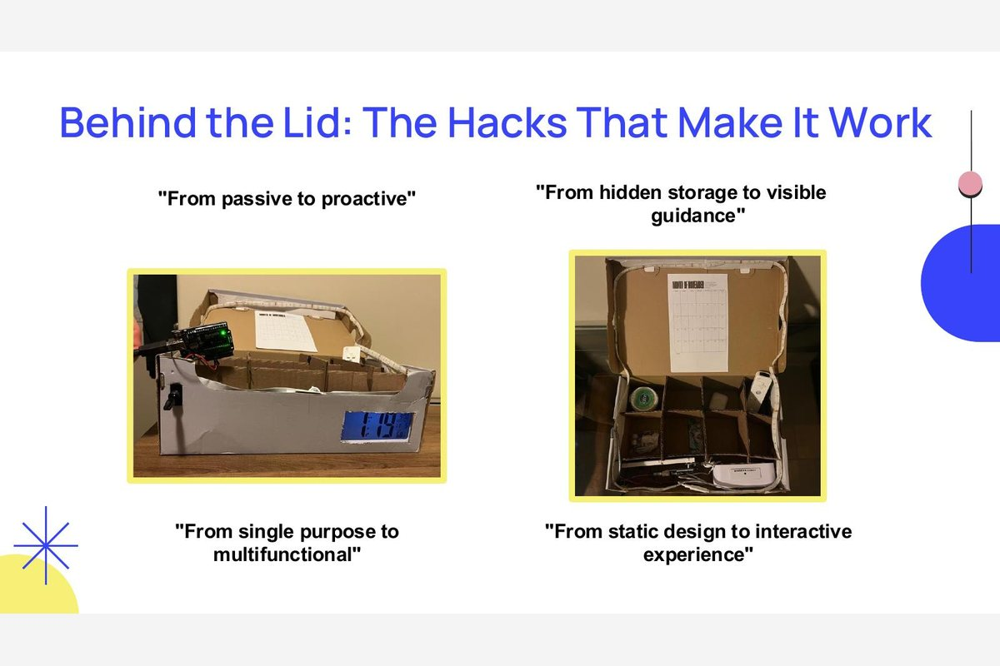

Physical Product & Maker Lab
Reminder Box
An Arduino-powered smart reminder system that gives daily tasks and medication a physical, low-tech home instead of another dismissible phone notification.
Role
Product Designer
Team
5 people: Nakul, Rei, Gayathiri, Hannan, Adrian
Duration
2025, Maker Lab
Tools
Arduino, LEDs, buzzer, cardboard prototyping
The Challenge
Phone reminders for medication and daily tasks are too easy to dismiss, so they get ignored by the people who need them most.
My Approach
Designed a physical Arduino box that uses light and sound instead of a screen, then tested it with real users and tuned the timing and intensity based on their reactions.
The Result
A working prototype built through four phases and presented to the class as a full final deliverable.
My Contribution
Team of 5. I contributed to the concept, the Arduino programming, the physical build, and the user testing that shaped the final cue timing.

The Problem
- Phone notifications are easily dismissed without action, especially when people are busy or distracted
- Digital reminders don't provide a physical cue that something needs to be done right now
- Existing pill organizers lack any reminder functionality and require manual tracking
- People need reminders that fit naturally into their living spaces without feeling intrusive
The Solution
- A physical box that doubles as real storage for vitamins or medication, keeping everything in one accessible place
- Glowing lights activate at scheduled times as a visual cue that catches attention without being intrusive
- Gentle buzzer sounds accompany the lights so the reminder still lands even if you're not looking at the box
- Arduino-based timing lets the schedule be customized to match an individual's actual routine
Process
Concept Development
Brainstormed physical reminder solutions and landed on a box format that could hold vitamins while giving both visual and audio cues.
Arduino Programming
Learned Arduino programming to control LED lights, buzzers, and time-based triggers for scheduled reminders.
Physical Construction
Built and assembled the box in the maker lab, fitting the Arduino, LEDs, and buzzer inside without the electronics getting in the way of actually using it.
Testing & Iteration
Tested the prototype with real users, refining reminder timing, light intensity, and sound volume based on their feedback.
What the research told me
What the team observed before building.
Insight 01
Notifications get dismissed
Phone reminders are too easy to swipe away, so the cue had to be physical, not digital.
Insight 02
The cue has to be gentle
Light and sound together got attention without the harshness that makes people unplug a device.
Insight 03
Calibration is the real work
Getting light intensity and sound volume right took more iteration than the Arduino programming did.
What came out of it
A working physical prototype, built and tested with real users through all four process phases (concept, Arduino programming, physical construction, and testing), then presented to the class as a full final deliverable.
What I learned
Designing for a physical object instead of a screen changes what "feedback" even means. You can't just add a toast notification if something's unclear. Getting the light intensity and sound volume right took more iteration than the actual Arduino programming did, which wasn't what I expected going in.
Build and process
Pages from the project presentation: how it works, what went into it, and what the box looks like.






